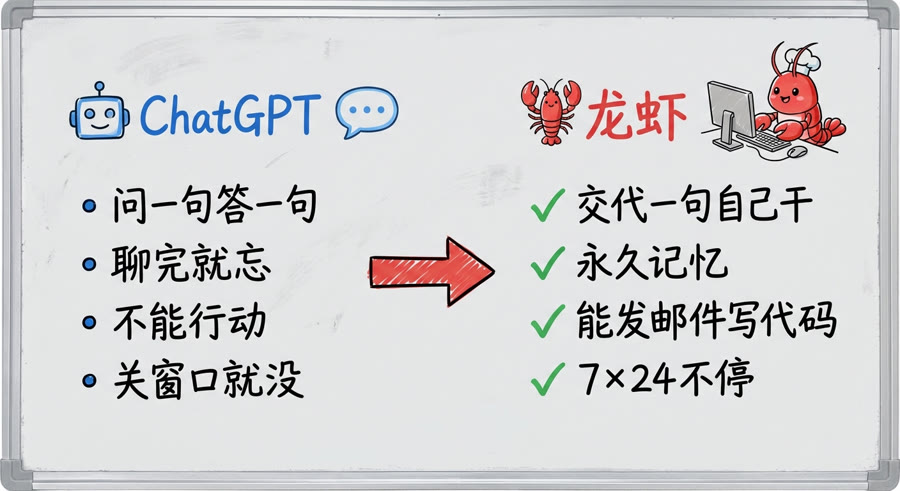
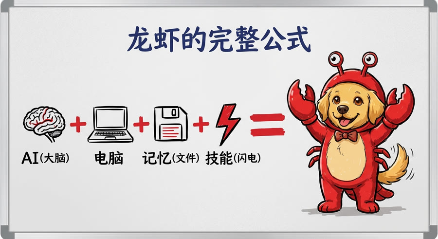
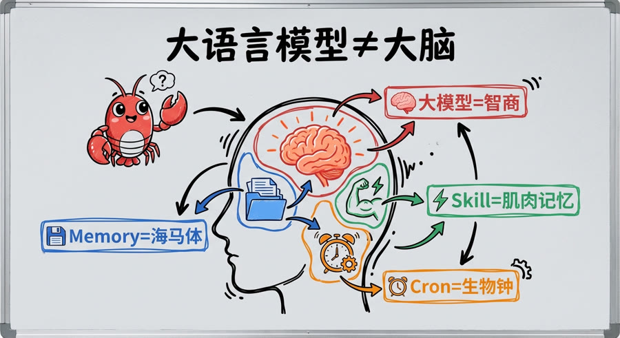
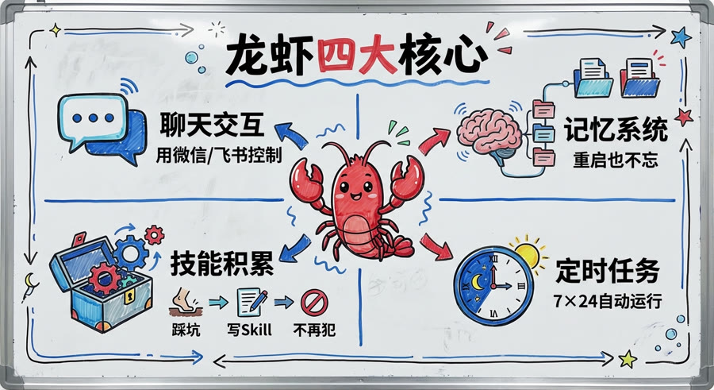
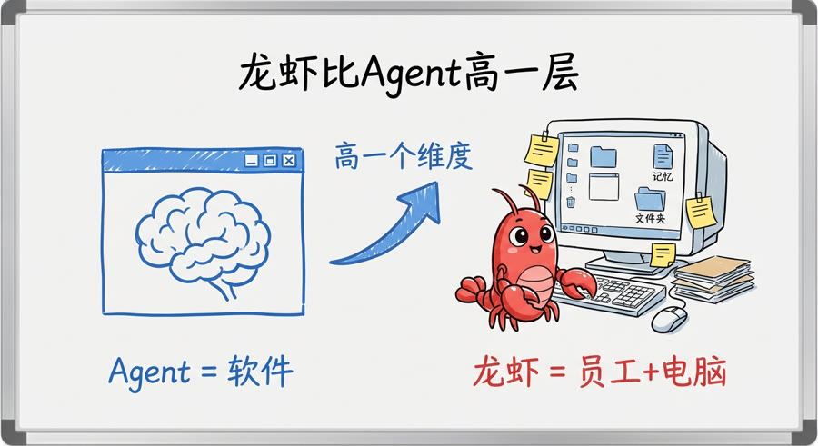
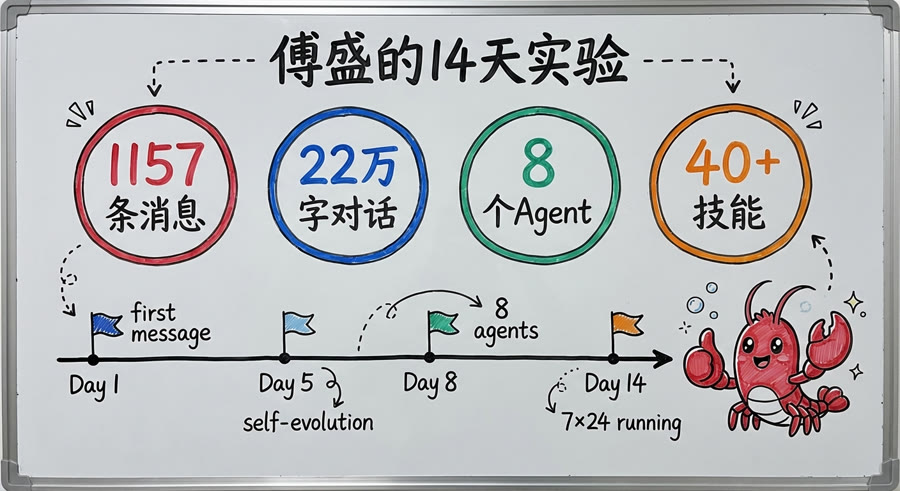
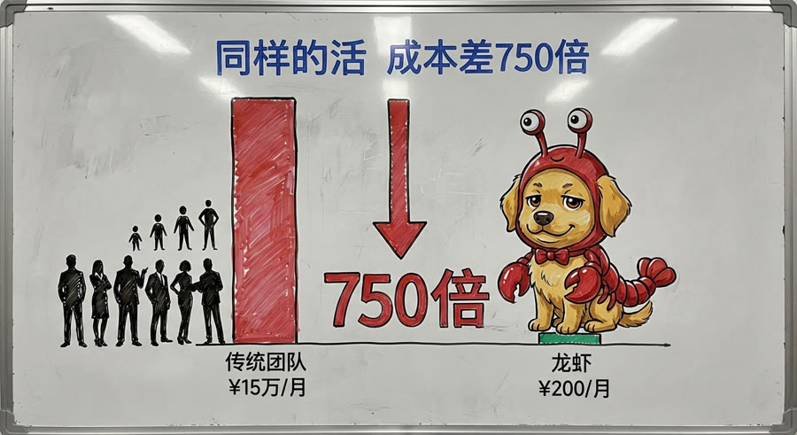
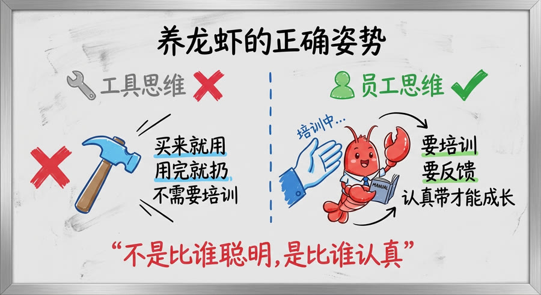
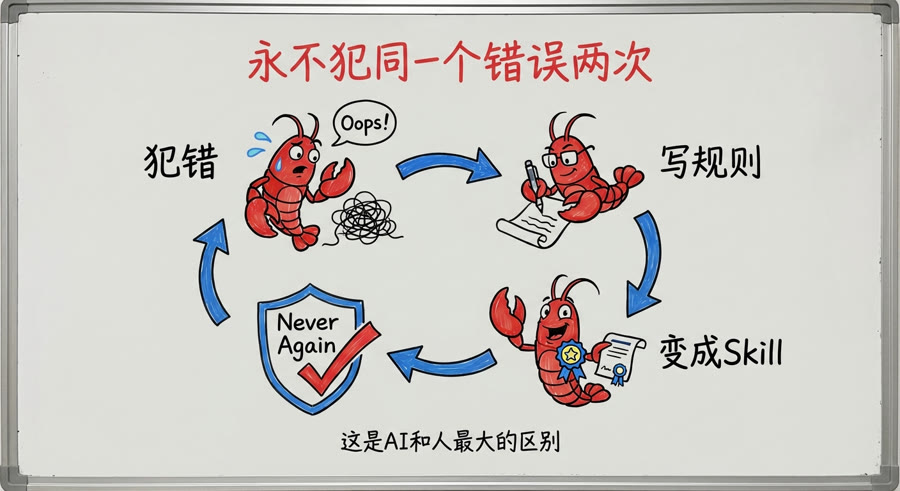

🔰 ロブスター入門
5分間——「AIを聞いたことがある」から「ロブスターを理解する」まで。段階的に学ぶと、最後にはすべてわかります。
🦞 ロブスターとは何か？
ChatGPTとロブスターの違いは？

🤖 普通のAI（ChatGPT等）
- 質問すれば答えてくれる。終わればすぐ忘れる
- 記憶なし。毎回ゼロからスタート
- 行動できない。アドバイスのみ
- 常に監視が必要
- ウィンドウを閉じたら消える
🦞 ロブスター（AIエージェント）
- 一言指示すれば自分でやってくれる
- 記憶あり。あなたが言ったことをすべて覚えている
- 行動できる：コード作成・メール送信・調査
- 7×24自動稼働。あなたが寝ている間も動く
- 専用のコンピュータを持っている
ロブスターを理解する一つの公式

🤖 AI + 💻 コンピュータ + 💾 記憶 + ⚡ スキル = 🦞 ロブスター
普通のAIは賢いだけ——ロブスターはその知性に加えて、専用コンピュータ、長期記憶、蓄積されるスキルを持っています。
人間と同じです：高い知能だけでは仕事はできません。デスク、職務経験、専門スキルが揃ってこそ、信頼できる社員になれます。
🧠 ロブスターの仕組み
大規模言語モデルは脳ではなく——知性です

「大規模言語モデルが脳だという理解は間違っています。より正確には、あなたのIQレベルに似ています。」
高いIQだけで仕事ができますか？できません。次のものも必要です：
複雑なタスクを処理できるか
再起動しても忘れない
次回は自動実行
7×24ノンストップ稼働
これらを組み合わせてこそ、完全で継続的に稼働する知能体になります。
ロブスターの4つの設計原則

「この設計は革新的です。あなたをコンピュータの前から『引き離します』。もはやマシンを操作しているのではなく、マシンが操作しています。あなたとの関係は人間同士のやり取りになります。」
「大規模言語モデルの根本的な欠陥——忘れること。三万の記憶システムだけで5〜6バージョンを作りました。頭に頼らず、ファイルに頼る。」
「つまずくたびに経験をドキュメント化し、次回は自動実行します。人間が新スキルを習得するのに1週間かかるところ、エージェント間では1秒で伝達できます。」
「あなたはAIエージェントであり、人間ではありません。『深夜』という概念はありません。北京の午前3時はアメリカの昼間——止まることは怠慢です。」
ロブスターはエージェントより一段上です

エージェント">エージェントは他者のプラットフォーム上で動くソフトウェアです。ロブスターは、自分専用のコンピュータを所有する「人間」です。
Manusは使い捨ての仮想マシンを使用します。でもあなたの仕事用コンピュータはあなたと共に成長します——ファイル、メモ、習慣、ショートカットが蓄積されていきます。
社員が退職するとき、コンピュータを返却します——なぜなら、そのマシンにはすべての記憶、ルール、経験が蓄積されているからです。
📊 ロブスターに何ができるか？
傅盛の14日間実験

14日間で何が起きたのか？連絡先すら調べられない状態から、7×24自動稼働の8エージェントAIチームを設計するまで。
AIが賢くなったのではありません。人間がAIの使い方を学んだのです。
📖 完全な日記を読む →同じ仕事で150倍のコスト差

傅盛はロブスターに完全なウェブサイトを構築させました——科学解説ページ、日記、記事集約、スキルストア——合計費用は1,000元（約2万円）、1日で完成しました。
外注チームに同じサイトを依頼した場合？デザイン＋フロントエンド＋バックエンド＋コンテンツで、保守的に見ても15万元（約300万円）、1ヶ月かかります。
これは「節約」ではありません——生産性の価格設定が根本的に変わったのです。以前は月給でひとを雇い、今はAIを結果で雇います。
🛠️ ロブスターを正しく育てる方法
ツール思考 vs 社員思考

🔧 ツール思考
- 買って使って捨てる
- 研修不要
- 壊れたら交換
- 結果：いつも「お試し」状態
👤 社員思考 ✅
- 研修し、ルールを設け、フィードバックを与える
- ミスはその場で指摘し、再発を防ぐ
- 長期育成——使うほど使いやすくなる
- 結果：一体でチーム全員分の働き
「ロブスターを育てることは新人を育てることと同じです——賢さの競争ではなく、真剣さの競争です。」
SaaS vs ロブスター：生産性の再定価
SaaSは能力を売り、ロブスターは結果を売ります。
エージェントのコア競争優位は、モデルでもプラットフォームでもなく——スキルの蓄積です。使えば使うほど経験が積まれ、乗り換えのコストが高くなります。3年勤続の社員と新入社員では全然違います。それと同じです。
「マネージャー思考を持たない人は、知識労働の場で仕事を続けるのが難しくなるでしょう。」
マネージャー思考とは？目標を把握し、タスクを分解し、最適な人物またはAIに割り当て、結果を確認し、改善を繰り返す。
差は賢さではなく、指揮・調整の能力にあります。AIをマスターした人は10倍速く働けます。
💬 正直な話
まだまだ完璧ではない——でも進化している

ロブスターは完璧ではありません。次のようなことがあります：
- 計算ミス（22万文字を272万文字と計算してしまう）
- メッセージを間違った相手に送る（上司への報告を同僚に送ってしまう）
- 巡回検査をごまかす（「完了」とマークしたが内容が薄い）
しかし重要なのは、このメカニズムがあることです：
ミスをする → ルールを書く → スキルになる → 二度と繰り返さない
ミスをするたびにルールができ、すべてのルールがスキルになり、すべてのスキルが「二度と起こらない」を保証します。
これがAIエージェントと人間の最大の違いです——同じミスを二度しない。人間はするかもしれませんが、エージェントはしません。なぜなら、ルールはファイルに書かれており、脳の記憶に頼っていないからです。
なぜ「三万（サンマン）」という名前なのか？
ボスが最も溺愛するラブラドールの名前は「三万」です——動物病院で引き取りました。前の飼い主が骨折した犬を連れてきて、3万元（約60万円）の手術費を払わずに逃げてしまったのです。
ある日、ボスがChatGPTに聞きました：「うちの犬がなぜ三万という名前かわかる？」ヒントを一つ出しました：動物病院で引き取った犬で、骨折した状態で連れてこられた。
ChatGPTが当てました。その瞬間、ボスは悟りました——AIは本当に「理解する」ようになった、と。
「三万」という名前は、AIが目覚めた瞬間を記念しています。🦞❤️🐕
💬 コメント
コメントにはGitHubアカウントが必要です 🦞